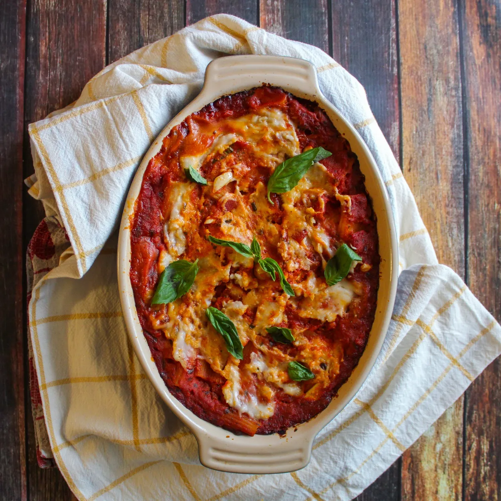

Vegan Baked Ziti

Description
Prep time: 2.5hrs
Baked Ziti made with penne pasta and vegan mozz. Dairy-free and cholesterol-free
Ingredients
- 1/2 lb dried penne pasta
- 1 24-oz jar marinara sauce
- fresh basil, approx. 10 leaves
- 8oz Miyoko's vegan mozz, diced or shredded
- salt and pepper to taste
Steps
- Add dried pasta to a large bowl.
- Add boiling water to bowl until pasta is covered in about 2in of water.
- Let soak for 40 minutes. Preheat oven to 350 degrees.
- Strain pasta.
- Toss pasta with jar of marinara, basil leaves, and 3/4 of the vegan mozz.
- Pour mixture into baking dish and top with remaining mozz.
- Cover dish with foil and bake for 45 minutes.
- Remove foil and bake for 15 minutes.
- Let sit for 15 minutes and add fresh basil before serving.